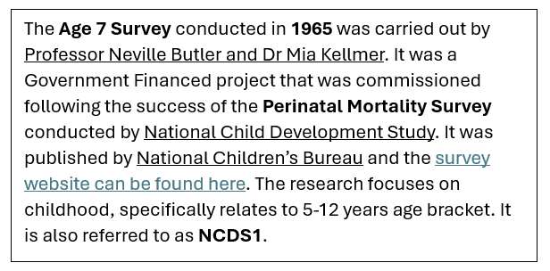
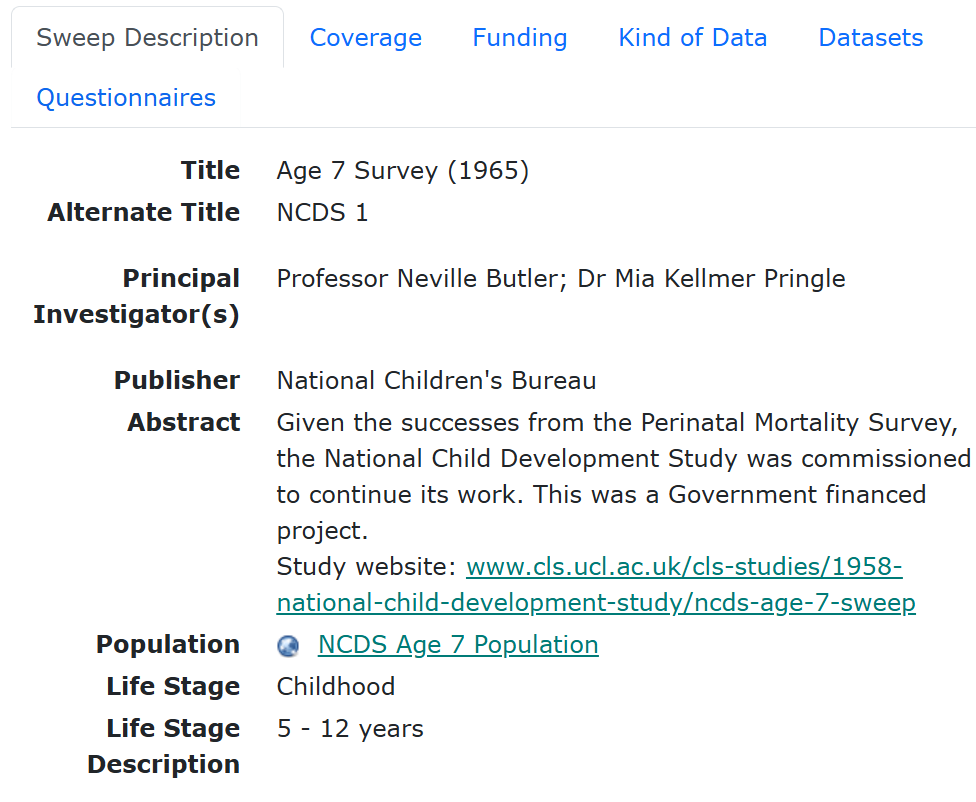
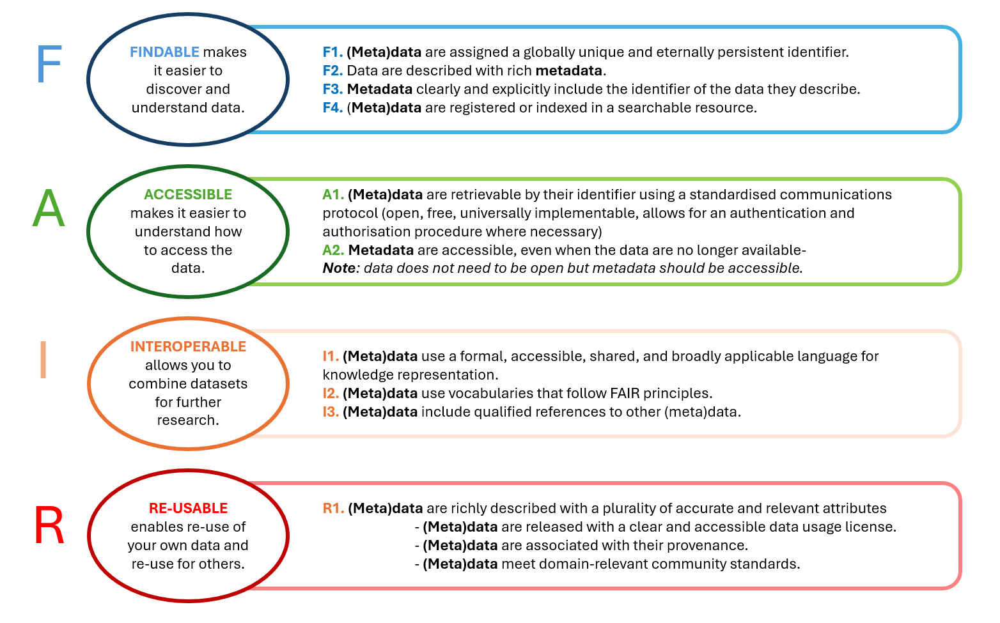

Unit 2.1 Introduction to metadata
Unit overview
Unit study time
- 2.5 hours
Intended learning outcome
By the end of the unit, you'll be able to...
- Define what metadata is and how it relates to research data
- Explain the purpose of metadata in research
- Explain how metadata differentiates from other forms of data documentation
- Understand the benefits of creating and using metadata
- Recognise the role of metadata in implementing the FAIR principles
- Identify who might request metadata
Introduction to metadata
In the last unit, we identified metadata as a fundamental component of implementing the FAIR principles. In this unit, we'll examine what metadata is.
Simply put, metadata describes your data. But what does that actually mean and why is it useful?
Let's begin with an analogy.
Imagine it's a hot day and you're thirsty. You have the option of two drinks.[1]
A plain, sealed drink can left on a park bench ...
Do you know what's inside the can? Would you want to drink it?
This can in a local supermarket, would you know what is inside it? Would you be happy to drink it?

 [2][3]
[2][3]
You probably picked Option 2. Why?
As Option one does not have label, we don't know ...
- What's inside the can
- Where it's come from
- When it was made
- Who made it
It's unlikely that anyone will want to drink from the can, and if they do, it's a risk.
Alternatively, Option 2 has a label that contains...
- The brand
- Description of the drink and its flavour
- Ingredients list
- Nutritional information
- Production factory
- Location of production
- Producer contact information
- Best before date
With that information, you'd feel more confident about what’s inside the can and whether you want to drink it. You'd also trust it more if you found it in a shop alongside other drinks as you'd trust the shop to stock genuine products. Plus, you can compare labels of other products and make an informed choice about which drink to pick.
It takes companies more time and resources to produce detailed packaging for products, so why do they do it?
Companies want people to find and buy their product. If they can't, they will fail at their goal of selling and making profit. Having good information about the product makes it more trustworthy and engaging for customers so they are more likely to buy it.
It may be legally required information, such as an ingredients list or place of origin. Without this, companies would not be able to produce and sell their products.
The consumer of the drink requires this information in order to make an informed decision. For example, someone who needs to measure their sugar intake for their health needs a clear nutritional label. Someone with allergies will require information about ingredients and the factory of production.
How does the drink analogy link to metadata in research?
The drink inside the can represents a dataset from a research study. The label providing the information about the drink represents the metadata.
Metadata describes the dataset, telling us how the dataset was produced and what it contains. Like the unlabelled can, if a research study doesn't have metadata, we don't know any contextual information such as who collected the data, when was the data collected or where. We also don't know what data exists within the datasets.
Similar to storing the can in a supermarket, data repositories and data catalogues store metadata for different research projects in the same place, allowing us to search and compare across different projects. This increases the trustworthiness of the project and it's data. We will cover data repositories and data catalogues in more detail in unit 2.3
In the same way having product information helps companies sell their products, metadata helps researchers make their data discoverable and reusable, leading to more citations of their data. Creating robust metadata can also be a funding requirement for a research project.
Defining metadata in research
Metadata is a form of data documentation, you may have heard it being called “data about data”. It can describe many different areas of research for example, the overall study, a dataset, the data within a dataset, the data collection method etc.
Metadata is usually created by the person(s) who conducted the research. Creating metadata can help you organise and manage your own data as well as provide people outside of your study the information they need to understand your research and be able to use it in an intelligent and meaningful way.
According to CODATA, metadata is ...
'Data about data. It is data (or information) that defines and describes the characteristics of other data. It is used to improve the understanding and use of the data.' [4]
The National Information Standards Organization offers a similar definition ...
'Metadata is structured information that describes, explains, locates, or otherwise makes it easier to retrieve, use, or manage an information resource. Metadata is often called data about data or information about information.' [5]
You may come across slight variations in the way people and organisations define metadata, but at its core, metadata supports three main purposes...
- Discovery: Metadata helps us find resources and makes our resources (e.g. datasets) discoverable.
- Understandability and context: Metadata helps us to quickly understand resources for example, what the resources consist of and how they were produced.
- Use and action: Metadata provides us with the information on how to access and use the resource including any limitations around this.
As a starting point, metadata can be considered as the who/what/where/when/why/how of the data.
- Who collected the data?
- What data did they collect?
- When was the data collected?
- Where was the data collected?
- Why was the data collected?
- How was the data collected?
Using metadata to understand data
🔍 Practice activity
Let’s apply what you have learnt so far to a research context.
You're a social science researcher conducting a study exploring the behaviours of young people in 1965-1970 in the Northern regions of England. To do this, you need to use secondary data (data that already exists) from that time period.
When identifying relevant secondary data for your project, you come across this dataset below [6]. You need to determine whether it would be useful for your research.
| N622 | N1171 | N2REGION | N1112 | N1261 | |
|---|---|---|---|---|---|
| 1 | 2 | 6 | -2 | 1 | 1 |
| 2 | 1 | -1 | 1 | 1 | 1 |
| 3 | 1 | 4 | 10 | 1 | 1 |
| 4 | 1 | 4 | 4 | 1 | 1 |
| 5 | 1 | 4 | 4 | 1 | 1 |
| 6 | 2 | 2 | 1 | 2 | 1 |
| 7 | 2 | 6 | 2 | 1 | -1 |
| 8 | 2 | 2 | 4 | 1 | 1 |
| 9 | 1 | 4 | 1 | 1 | 1 |
| 10 | 1 | 4 | 1 | 1 | 1 |
Just like the unlabelled can, you don't have the information you need to understand the dataset and assess if it's useful for your study.
-
What information would you need to determine whether this dataset is relevant to your project?
-
What information would you need to certify and trust this data?
List some questions that can help us know the who/what/why/where/how of the dataset.
Expand the box to explore questions about the dataset
- Who created the data?
- Who is the data about?
- Who conducted the study?
- What study is this dataset a part of?
- What concepts is this dataset measuring?
- What do the column headings mean?
- What do the numbers mean?
- Where did the study take place?
- Where was the data collected?
- When did the study run?
- When was the data collected?
- Why did the study take place?
- How was the data collected?
- How is missing data represented?
To answer the who/what/why/where/how questions, we need metadata. As metadata can describe different areas of your research, we could group the questions by their focus.
Explore each tab to see how we group the questions.
- Who conducted the study?
- What study is this dataset a part of?
- Why did the study take place?
- When did the study run?
- Who created the data?
- What concepts is this dataset measuring?
- When was the data collected?
- Where was the data collected?
- How was the data collected?
- Who is the data about?
- What do the column headings mean?
- What do the numbers mean?
- How is missing data represented?
Study metadata
Metadata can describe the overall study, giving an overview of the whole research effort. Study level metadata is particularly useful when we're looking through a large amount of research. It also gives us supporting information around the dataset that may not be included in the dataset itself, for example who funded the research and who to contact for more information about the project.
Metadata could provide the following information...
Who conducted the study?
- Principal investigator of the study
- Publisher of the study
- Funder of the study
What study is this dataset a part of?
- Title of the study
- Subject or topic of the study
- Title of datasets produced by the study
When did the study run?
- Date study started
- Date study completed
- Date made available
Why did the study take place?
- Abstract giving context for the study
Where did the study take place?
- Country / countries
- Region / regions
- City / cities
🔍 Practice activity
You can find study level metadata for the unlabelled dataset on CLOSER Discovery[7]. CLOSER Discovery is a metadata catalogue that pulls together metadata from different UK longitudinal population studies in one place, so people can search, discover and understand research (we will cover data and metadata catalogues in more detail in unit 2.3.
Using the study metadata available on on CLOSER Discovery, try answering some of the questions above.
We know the study was conducted across England, Scotland and Wales and produced as part of the National Child Development Study.[8]
Do we have enough information to know if this dataset is relevant and/or useful for our research? What other information might we need?
Dataset metadata
While the study metadata gives us a useful overview, having information about the individual dataset can help us further assess whether the data is relevant to our work. Dataset metadata is particularly important when a study produces more than one dataset as the datasets may be produced at different times, by different researchers or have a different are of focus.
Metadata could provide the following information...
Who created the data?
- Person(s) who collected the data
What concepts is this dataset measuring?
- Abstract and/or dataset description
When was the data collected?
- Start date of data collection
- End date of data collection
- Date data was published
Where was the data collected?
- Country / countries
- Region / regions
- City / cities
How was the data collected?
- Data collection instrument
🔍 Practice activity
You can explore metadata for the unlabelled dataset on CLOSER Discovery here[9]. Using this metadata, try answering some of the questions above.
Through exploring the dataset metadata, we know that the dataset was produced in 1969 and it was collected via a survey. This falls within our brief. However, what further information do we need to understand the dataset?
Variable metadata
While dataset metadata provides more information about how and when the data is collected, we still don't know what the column headers mean or what the numbers represent so we can't interpet the data. Variable metadata is a key tool that enables us to do this.
We use the term variable all the time in research, but what is it's definition?
CODATA defines a data variable as...
In data collection, refers to a characteristic, number, property or quantity that can be observed, measured or recorded. May alter in state and/or value. [10]
The metadata standard, DDI Alliance, defines a variable as...
'... a characteristic of a unit being observed. A variable might be the answer of a question, have an administrative source, or be derived from other variables. [11]
Examples of a variable could be ...
- Height
- Weight
- Age
In research, the data you collect about this variable is what makes up our datasets. For example ...
- Height: 1.73m, 1.45m, 1.67m
- Weight: 57kg, 69kg, 71kg
- Age: 29 years, 37 years, 64 years
You can collect data direct from research activity e.g. measuring someone with a tape measure, weighing someone with scales, asking someone to state their age in a survey. You can also derive data from other data. For example, you can calculate someone's BMI from the variable data collected for height, weight and age. This would make BMI a derived variable, as it is calculated through other variables.
What are the variables in the unlabelled dataset?
The variables are...
- N622
- N1171
- N2REGION
- N1112
- N1261
Simply put, in tabular data (data stored in rows and columns), variables are the header of the columns.
Metadata can provide information about the vairables to helps us understand the data further. For example...
What do the column headings mean?
- Variables the dataset contains
- Description of each variable
What do the numbers mean?
- Numeric values / codes
- Unit of measurement
- Missing data values
What type of data are they?
- Data type: numeric, string
How was the data collected
- Data collection instrument
🔍 Practice activity
Information about the data can be found on CLOSER Discovery here under the topic tab.[12] You can select different variables to gain insight into what data they collect and the data was collected (e.g. the question asked to the participant in the study).
For example, we can see that the variable N2Region reders to the region the participant is living in and that '1' = North, '2' = North East, '3' = E & W Riding and '4' = North Midlands. This helps us determine what data within the dataset is relevant to our study as we are only looking at northern regions of England.
Variable metadata is important when deciding whether to access datasets, as it can be time consuming and expensive. You may examine the study and dataset metadata and believe it is relevant to your project. However, when you then access the dataset, it doesn't contain the data you were expecting for example, it has a different topic focus or uses measurements that are not relevant for your work.
Having variable metadata before you access a dataset allows you to make an informed decision about its relevance to your work. This makes the process more efficient and cost effective.
Data collection metadata
We've explored metadata about the study, the dataset and the data itself. What other metadata might be helpful for further understanding the dataset?
Information about how the data is collected can help us understand how the data was produced as well as assess its relevance and trustworthiness.
If we were wanting to find out more information on a survey collection method, we may ask ...
What questions were included in the survey?
- The order of the questions
- Whether a question is linked to another question
What was the intent/concept of the survey?
- Key themes/topics linked to the question
- Does the question relate to an assessment scheme
What were the response options for each question?
- The format of the response e.g. free text, multiple choice, scale
What was the data capture?
- Method of recording answers e.g. self-completed or recorded by another person
- The mode of delivery e.g. online or paper survey
🔍 Practice activity
Metadata about the survey can be explored here[13].
Challenges of not having metadata
If you didn't have metadata, how would you go about finding the information you need to understand the data?
We would probably have to engage with time-consuming processes, such as contacting people or organisations to get further information about the dataset and what it contains.
While some information about data exists in research papers and outputs, it can take time to find and extract the information you need. Also, the purpose of a research paper is to report the findings of a particular research question so the information available may be limited and/or unsuitable to facilitate reuse.
Metadata makes research more time and cost effective. It maximises the potential and impact of data by providing the information needed to discover, understand and (re)use data. This creates more opportunity for data citations, secondary research and cross-study comparison. Therefore, the same dataset can be used for different purposes and research enquiries beyond what it was originally created for. Can you think of a situation where metadata helped, or could have helped, your work?
Metadata vs. data documentation
Metadata is a type of data documentation. However, what makes metadata different from other forms of data documentation?
Consider these two descriptions of a dataset[14].
- Description 1
Description one was written in a Microsoft Word document which is stored alongside a dataset.  - Description two
Description two is available online on a data catalogue site [15] (we will cover data catalogues in more depth in unit 2.3). 
Both contain the same information, and both could be called 'data about data' or 'information about information'. However, only one of these examples can be considered metadata.
What are the differences between these two descriptions?
- Which is most effective for research data management? Why?
- Which description do you think is metadata? What features make it metadata?
Differences between the two descriptions
Structure Description one is written in full sentences whereas description two has been broken down into different sections. Each of these sections has a title which specifies what type of information is included in that section.
Formatting Description one uses formatting (such as bold and underlined text) to highlight different types of information. It is also stored in a free-text software, Microsoft Word. Description two uses titles for different types of information and the description itself does not rely on further formatting. It also stored online, meaning the information is readable by machines.
Description two is the documentation that is metadata, as it is structured and does not rely on formatting to express information. In the next section, we'll explore the key features of metadata further.
Structured and machine-readable documentation
Two defining features of metadata are that it is structured documentation and machine readable. By being machine readable, metadata is also machine actionable, meaning we can use computers to get more functionality out of our documentation.
Below, we explore these features in more depth.
Rather than a long text block, metadata is structured information that is separated into metadata elements. A metadata element is the container that describes what information the metadata is covering. It could be described as the title or the label for the metadata. For example, 'Title', 'Alternate Title', 'Publisher', 'Date', 'Author'.
Sometimes there are rules around what input is allowed for a metadata element in order to make sure the information is clear and consistent. For example, for the metadata element 'Date', there may be a specification to format the information as dd/mm/yyyy.
Relationships are mapped between different metadata elements, creating a structure and hierarchy to the information. For example, a variable belongs to a dataset and a dataset belongs to a study, or a person is linked to an organisation or a study. By explaining how each element connects to others, metadata makes the information easier to understand and navigate. This structure is also essential for machines to read and act on metadata correctly (we’ll cover that in next tab). Without these relationships, you’d end up with a confusing mix of information at different levels, all jumbled together.
Metadata has to be stored in specific machine-readable formats such as JSON, csv, XML, and not in free text formats such as Microsoft Word or PDF. In order to store metadata in these formats, the information must be structured so computers can extract the information. If documentation includes different types of information in one paragraph and/or relies on formatting such as colour, italics, bold, underline to indicate different information, a machine will not be able to interpret its meaning.
By being machine-readable, metadata can tell a computer what something is, how it relates to other objects or information, and what to do with the information. By being machine readable, metadata can also be machine-actionable.
By describing how different metadata elements relate to each other, for example what categories they're in or if a piece of information is linked to another piece of information, machine's can not only read the metadata but also conduct further actions.
For example, we can use computers to search and filter our metadata using sites such as data repositories and data catalogues. We'll look more closely at these in unit 2.3.
We use metadata in many different areas of our lives, not just in research. Now we have unpacked the definition of metadata and its defining features, can you list where you use metadata in your everyday life?
Examples of where we use metadata outside of a research context
- Streaming platforms use a programme's metadata so people can search for shows by genre, director or length.
- An online shopping site uses metadata to categorise and describe its products so people can find the item they're after. If we didn't have metadata, TVs and Shoes would be mixed up in the same search and it'd take a long time to find the right product.
- Books registered on an online library catalogue have metadata like topic, author and data of publication, helping people find the book they need.
- AI is dependent on metadata to function. Metadata tells AI what digital resources represent, which helps it identify objects, apply the right algorithms, and perform tasks accurately. Without metadata, AI would struggle to interpret raw data and wouldn’t be able to function effectively.
Benefits of metadata
Let's consider what the benefits of using and creating metadata are in research.
What are the benefits ....
For people creating metadata (metadata creators)
For people creating metadata, metadata ...
- Preserves your data and research
- Makes data management processes more robust and efficient
- Enables more accurate, reliable and higher-quality research
- Helps your future self understand and reuse the data
- Helps others find, understand, compare, and use your data
- Increases the visibility of your study to other researchers and organisations
For people using metadata (metadata users)
For people using metadata, metadata can help them...
- Understand a research project and its data efficiently and effectively
- Assess how relevant data is for your research effort
- Compare datasets
- Reproduce or reuse data
- Save time by not having to contact people for basic information around datasets
For research as a whole
For research as a whole, metadata ...
- Saves time for people working across the research field
- Provides proof of transparent and valid conduct
- Implements the FAIR data principles
- Enacts best practice in research
- Exploits the full potential of your data by supporting cross-study comparisons and secondary research
- Using secondary data can save researchers' time, money, and effort by using data that already exists rather than duplicating the work of others
Across research, the benefits of metadata are widely recognised. It helps data owners keep their work organised and makes it easier for data users to understand and reuse that work. Because of this, researchers are often required to provide metadata for their work.
You may be required to create metadata by…
- Institutes in your working contract or project agreements.
- Funding agencies who may require metadata to ensure reusability of the data and that a project is meeting FAIR requirements.
- Data repositories or catalogues will list required metadata in order to deposit your data and/or metadata.
- Journals may specify metadata needed as a condition for publishing.
- Supervisors may require metadata in order to encourage data citations and enhance researcher reputation .
- By certain projects that include collaborations across agencies and/or organisations.
- Policy passed by national governments that require researchers to make their metadata widely available in order to encourage the discoverability and resuability of research. For example, Act No 130/2002 Coll. on the Support of Research and Development from Public Funds[16] passed in Czech Republic, that requires all projects using public funds to publish their metadata[17].
Thinking back to unit 1.2 Research Data Management (RDM), metadata is a core component of RDM and should be included in all Data Management Plans (DMPs).
Metadata and FAIR
Thinking back to the previous unit, metadata is a key part of making data FAIR. When we talk about FAIR data, we usually think about only about the data itself, but the metadata also needs to be FAIR. If your metadata is well-structured and follows FAIR principles, it makes your data easier to discover, understand, and reuse, giving you and others the full benefit.
Click the tabs below to explore how metadata makes our data FAIR and what steps we can take to make our data FAIR.
Metadata describes your research, from the study level (e.g. title, author, location) to the variable level (e.g. variable name, data type, unit of measurement). It includes persistent identifiers (like DOIs) linked to a study or dataset. By making your metadata findable, you make your research findable.
You can make your metadata findable by depositing it in a data or metadata catalogue. This makes it searchable on these platforms, allowing people to find it. You also need to store your metadata to be structured and stored in a machine readable format, such as XML, JSON or CSV. If it's not, machines will not be able to process and action your metadata meaning people will be less likely able to find it.
Metadata specifies the access conditions (open or restricted) and protocols (HTTP, FTP, API) of your research data. It also provides license information so users know how they can use your data. This ensures that your data is both accessible and secure.
You can make your metadata accessible by ensuring that your metadata is available even if you have closed data. By being publicly accessible, researchers know the dataset exists and how to request access.
By describing your data in a structured way, metadata makes your research interoperable with centralised systems like data and metadata catalogues. If we had unstructured free-text description of our research, data and metadata catalogues wouldn't know how to process the information. This means your research can't be integrated into these systems and it would be hard to compare your research with other studies as there is no clear structure to follow.
You can make your metadata interoperable by ensuring your metadata is structured and standardised where possible. Sometimes data and metadata catalogues provide you with schemas you can follow, ensuring you capture the necessary metadata in the correct way. Using controlled vocabularies further help you create interoperable metadata by providing standardised terms that are widely available. This reduces the risk of different studies using different words to mean the same thing.
You can also follow metadata standards which define how metadata should be organised and provide consistency in the terms you use. This means you will be able to compare and exchange metadata with any study that uses the same standard as you. The power of a standard increases if more people use it as more studies become interoperable. So, even if you're not planning on depositing your metadata to a data or metadata catalogue, following a metadata schema and/or standard can help you implement a clear structure for your metadata and make it interoperable for future use.
Metadata makes your research easier to find and understand, which naturally encourages data reuse. It gives the background and context for a study, helping others interpret the data correctly. By recording the data’s provenance, metadata builds trust and reliability, making your data more likely to be used in future research.
If your metadata follows standards and is interoperable, your study can be compared and combined with other datasets, opening the door to new research questions. Finally, metadata outlines the license and usage terms, so people know exactly how they’re allowed to use your data.
The guidelines below explore how to make both our data and metadata FAIR[19]...

In the following units, we look further into how we can implement this guidance using data repositories and catalogues unit 2.3), controlled vocabularies (unit 2.4 and metadata standards (unit 2.5).
You can test your FAIR knowledge with Data Archiving and Networking Service's (DANS) FAIR Aware tool. The online questionnaire helps you review your understanding of FAIR and the role of metadata in implementing the principles.
You can also assess how FAIR your data is using the ARDC FAIR data assessment tool here.
Test your knowledge
True or false...
- FAIR principles only apply to published datasets, not metadata.
- Metadata helps ensure data is interpretable by both humans and machines.
- Metadata is only relevant for digital datasets.
- It is always optional to create metadata.
Which of the following is a key purpose of metadata in research?
1. Encrypting data
2. Describing data content and structure
3. Compressing data files
4. Removing duplicates
Which of the following is not typically included in research metadata?
1. File size
2. Author or creator
3. Data analysis results
4. Licensing information
Which format can you not create metadata? Select all that are relevant.
- JSON
- .txt
- XML
- Word
- CSV
Answers
True or false...
- FAIR principles only apply to published datasets, not metadata. **FALSE**
- Metadata helps ensure data is interpretable by both humans and machines. **TRUE**
- Metadata is only relevant for digital datasets. **FALSE**
- It is always optional to create metadata. **FALSE**
Which of the following is a key purpose of metadata in research?
1. Encrypting data
**2. Describing data content and structure**
3. Compressing data files
4. Removing duplicates
Which of the following is not typically included in research metadata?
1. File size
2. Author or creator
3. Data analysis results
4. Licensing information
Which format can you not create metadata? Select all that are relevant.
- JSON
- .txt
- XML
- Word
- CSV
Further resources
Want to know more?
We will explore more features of metadata, e.g. how we use it and what tools are available for metadata best practice, in this course. However, if you want to look at other resources that introduce what metadata is, you can explore some of the links below ...
- You can watch this knowledge clip from UGent University to gain an overview of metadata in a research context[21]
- You can explore CESSDA's explanation of metadata for qualitative and quantative metadata here[22]
References
- [1] DDI Training Group. (2024). Understanding Metadata. Zenodo.
- [2] Scottish Grocers (2025) 'Irn Bru Regular Cans' Online image
- [3] The Little Market (2025) 'IRN-BRU Original 330 ml' [Online image] (https://thelittlemarket.sg/product/irn-bru-sparking-soft-drink-330m/?srsltid=AfmBOophDjebL659FdEE7LGdvSs6ZnJ9MND2BzNMrvpt7u5PpqsBhgeY)
- [4] CODATA (2025) RDM Terminiology: metadata
- [5] Riley, J. (2017) 'Understanding metadata: what is metadata, and what is it for?' National Information Standards Organization. Baltimore.
- [6] University of London, Institute of Education, Centre for Longitudinal Studies. (2024). National Child Development Study: Childhood Data from Birth to Age 16, Sweeps 0-3, 1958-1974. [data collection]. 3rd Edition. National Children's Bureau, National Birthday Trust Fund, [original data producer(s)]. UK Data Service. SN: 5565, DOI: http://doi.org/10.5255/UKDA-SN-5565-2
- [7] CLOSER (2025) 'National Child Development Study' CLOSER Discovery
- [8] University of London, Institute of Education, Centre for Longitudinal Studies. (2024). National Child Development Study: Childhood Data from Birth to Age 16, Sweeps 0-3, 1958-1974. [data collection]. 3rd Edition. National Children's Bureau, National Birthday Trust Fund, [original data producer(s)]. UK Data Service. SN: 5565, DOI: http://doi.org/10.5255/UKDA-SN-5565-2
- [9] CLOSER (2025) 'Age 11 Survey (1969)' CLOSER Discovery
- [10] CODATA (2025) RDM Terminology Bank: Variable
- [11] DDI Alliance (2025) DDI-RDF Discovery Vocabulary (Disco)) World Wide Wive Consortium (WC3)
- [12] CLOSER (2025) 'NCDS2 Parental Interview Form (1969) Dataset' CLOSER Discovery
- [13] CLOSER (2025) 'NCDS Age 11 Parental Interview Form' CLOSER Discovery
- [14] University of London, Institute of Education, Centre for Longitudinal Studies. (2024). National Child Development Study: Childhood Data from Birth to Age 16, Sweeps 0-3, 1958-1974. [data collection]. 3rd Edition. National Children's Bureau, National Birthday Trust Fund, [original data producer(s)]. UK Data Service. SN: 5565, DOI: http://doi.org/10.5255/UKDA-SN-5565-2
- [15] CLOSER (2025) 'Age 11 Survey (1969)' CLOSER Discovery
- [16] Parliament of the Czech Republic (2009) ACT No. 130/2002 Coll. on the Support of Research and Development from Public Funds and on the Amendment to Some Related Acts Czech Republic
- [17] Ministry of Foreign Affairs of the Czech Republic (2020) 'Key Documents on Czech Research and Innovation'
- [18] CODATA (2025) RDM Terminology: Research data management
- [19] CODATA (2025) RDM Terminology: FAIR data
- [20]Go FAIR (2025) FAIR Principles
- [21] UGent University (2021) Open Science Knowledge clip: Metadata [Online video] www.youtube.com/watch?v=DW2T_cnqKPU)
- [22] CESSDA (2025) 'Documentation and Metadata' Data Management Expert Guide www.dmeg.cessda.eu/Data-Management-Expert-Guide/2.-Organise-Document/Documentation-and-metadata